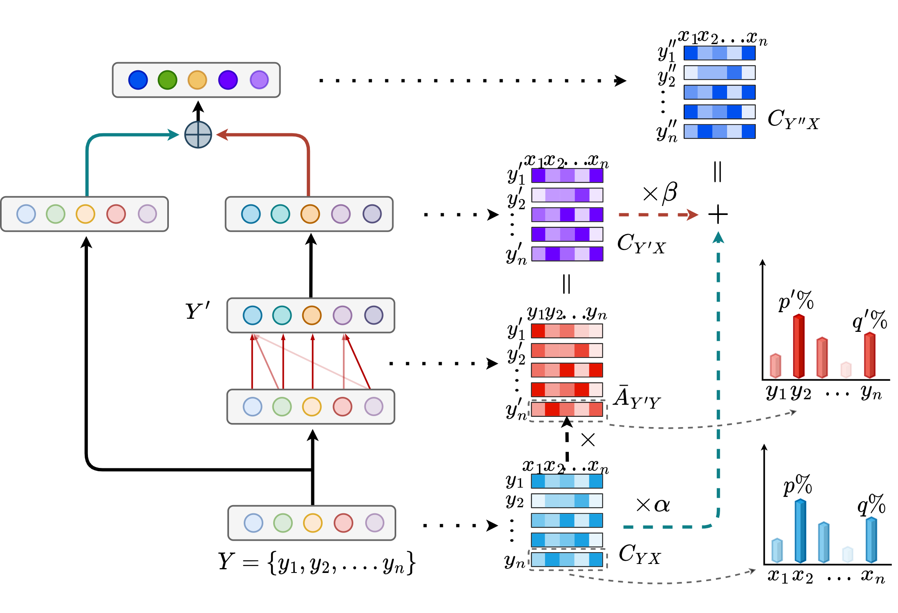
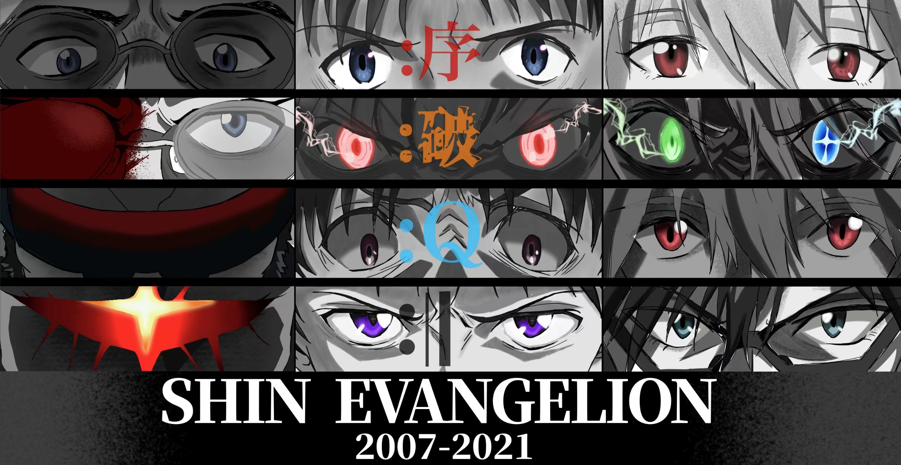

|
Ziyu Zhou 周子渔 My name is Ziyu Zhou (周子渔 in Chinese). I am a student researcher of AI. I will receive my B.Eng. degree in Software Engineering at Beijing University of Technology, School of Software, under supervision of Prof. Xiaodan Zhang. My research interest focuses on Trustworthy AI. The long-term research goal of my study is to analyze and control the most advanced AI algorithms, models, and systems. To be specific, I am exploring the interpretability, robustness, granularity, and generalizability of AI, to cope with the explainability, safety, privacy, fairness, more refined controllability and human-interactivity problems in AI applications. I have wonderful collaborations with Ziyu Zhou@HKUST(GZ) CityMind Lab, Zihao Wang@UHawaii-Manoa. I am also looking forward to more interdisciplinary collaboration in the future. |

|
Research Programs & Publication(* indicates equal contribution) |
|  |
Generic Attention-model Explainability by Weighted Relevance Accumulation
Yiming Huang, Aozhe Jia, Xiaodan Zhang, Jiawei Zhang Proceedings of the 5th ACM International Conference on Multimedia in Asia (MMAsia '23, CCF-C & CORE-C, reprentative work of my undergrad research) paper / pdf / sildes / video This work explores the explainability of multimodal attention, especially stressing the importance of residual connection for explainability. |

|
TimesNet-PM2.5: Interpretable TimesNet for Disentangling Intraperiod and Interperiod Variations in PM2.5 Prediction
Yiming Huang*, Ziyu Zhou*, Zihao Wang*, Xiaoying Zhi, Xiliang Liu Atmosphere (SCI-Q3) paper In this paper, we accomplish task-specific adaption of TimesNet (ICML '23) named TimesNet-PM2.5. This specialized version improved the performance and interpretability of the PM2.5 prediction of Haikou, Hainan Province. |

|
STFM: Enhancing Autism Spectrum Disorder Classification Through Ensemble Learning-Based Fusion of Temporal and Spatial fMRI Patterns
Ziyu Zhou*, Yiming Huang*, Yining Wang*, Yin Liang Pacific Rim International Conference on Artificial Intelligence (PRICAI '23, CCF-C & CORE-B) paper / pdf We propose a Spatio and Temporal framework based on cross-attention for better autism spectrum disorder classification. |

|
CoC-GAN: Employing Context Cluster for Unveiling a New Pathway in Image Generation
Zihao Wang*, Yiming Huang*, Ziyu Zhou* Arxiv (2023) arxiv We employ Context-Clustering Block (ICML '23) into GAN for better interpretability. |
Education Background
|

|
Bejing University of TechnologySchool of Software, B.Eng. in Software EngineeringGPA=88.32/100=3.69/4.0 2020.09 - 2024.07, Beijing, Chaoyang |
Tsinghua University High SchoolHigh School GraduateNational College Entrance Exam=608/Math=127/English=133/Physics=91 2017.09 - 2020.07, Beijing, Haidian |
Miscellanea |
|
I love biking, although all of my bikes are broken now. My favorite animation: Rebuild of EVANGELION series. My favorite TV series: House of Dragons. My favorite poem: Sailing to Byzantium. My favorite book:《文学的邀约》. My favorite retaurants: 宜宾招待所，东发道. I have lived in Beijing for more than 10 years and my hometown is Jilin, China. My motto: 缘自尘心起，逆旅天地间。 |
Gallery |
|  |